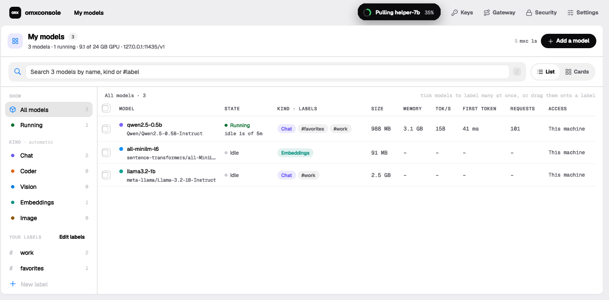
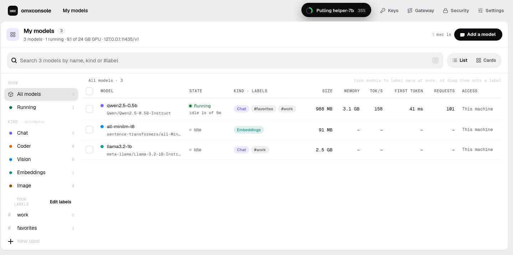
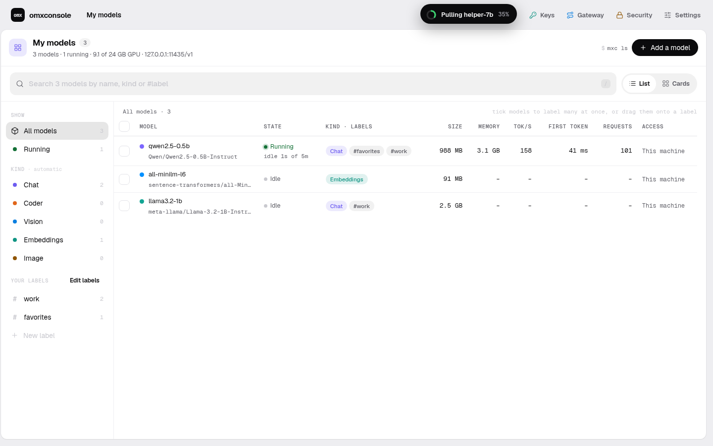
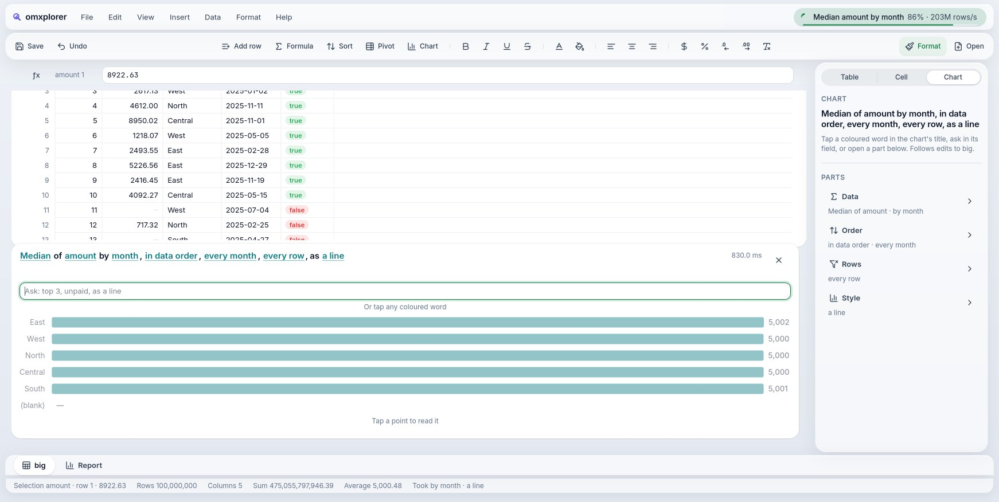
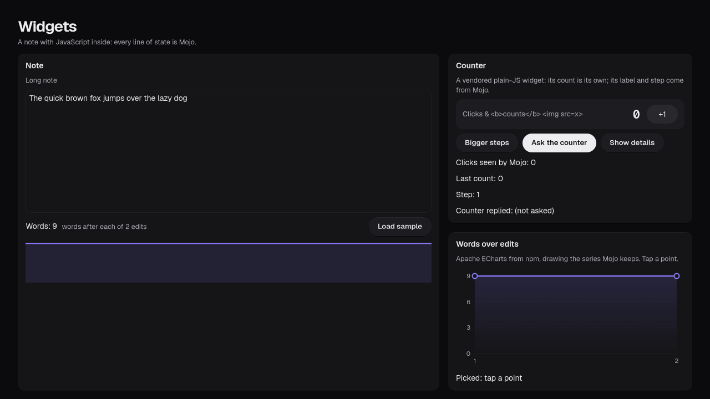
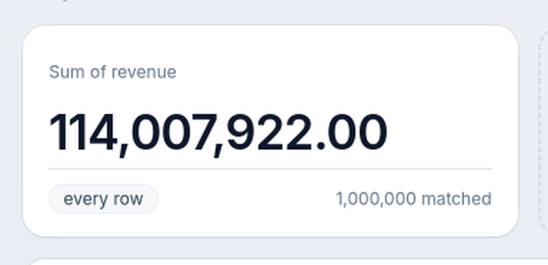
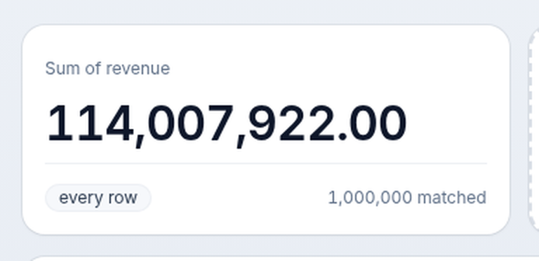
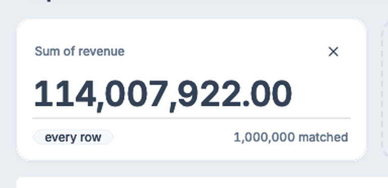
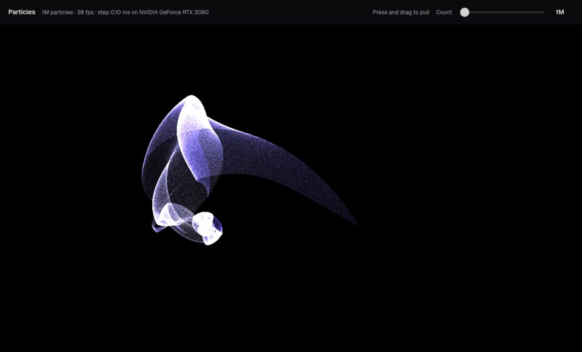

omxcode
Describe an app to an agent. Get it native on every screen, the GPU underneath. One Mojo file, button to GPU kernel. Every app speaks MCP; over AG-UI, agents build its screens live.
Four reasons. And where it shouldn't exist.
No JSON, no HTTP, no second process.
Nothing extra to start, keep alive and debug. Apps that move a lot of data between the screen and the computing are faster and simpler.
From pixels to GPU kernels.
Mojo writes the interface and the CUDA-class kernels. In omxplorer, the group-by kernel sits in the same codebase as the sheet that shows its totals.
Every app can be driven by an agent.
omxcode has an agent host, so each app can be operated by an agent through the same code that draws its screens. JS apps need that built in separately.
Native on every device from one codebase.
Phone included. This is the least proven part: Mac and iPhone build but haven't run on hardware yet.
Forms, CRUD screens, dashboards over an API, marketing sites, ordinary SaaS. JS wins those on ecosystem alone, so we don't compete there. When a JS library is the better tool, embed it as a widget inside omxcode.
Mojo is the language agents are fluent in. omxcode is how they ship.
Fast as Rust, strict, small, and it reaches the GPU. omxcode turns it into whole apps, and every app back into tools.
Button to GPU kernel. Nothing to glue.
struct Main(App): def view(self) -> View: return VStack(Image(self.pixels, W, H), Button("Run on GPU", on_tap=RUN)) def update(mut self, event: Event): if event.message == RUN: var o = self.gpu.render[mandelbrot]( W, H, p) self.pixels = o.pixels.copy() def mandelbrot(x: Int, y: Int, w: Int, h: Int, p: Params) -> UInt32: # runs on the GPU: one thread per pixel …

0.14 ms on the GPU
RTX 3090 · the same loop on the CPU: 43.7 ms
Every app is two functions.
view() draws it. update() reacts. One way to do each thing, so less for an agent to get wrong.
viewdef view(self) -> View: return Button("Tapped " + String(self.n), on_tap=TAP)
updatedef update(mut self, e: Event): if e.message == TAP: self.n += 1
Agents don't click pixels. They call buttons.
Every app is an MCP tool server. Buttons, fields and JS widgets become tools, with no per-app work. A disabled button isn't one.
file-save
Search…→search {text}
▦ a grid→read
Delete→no tool
tokens to see what changed, in omxplorer
Ask an agent. It answers with a screen.
Over AG-UI, the reply is UI as data: native components, checked against the catalog before anything draws.
Run it on your own model, served locally by omxconsole.
web and Linux · tested with the official AG-UI SDK
One app. Each platform's own widgets.
AppKit, GTK, HTML and Android views. iPhone builds. Not a web page in a wrapper.




The recipes are in the box. llms.txt and the component matrix tell an agent what exists and where it runs.
WebGPU speed. 2× native Rust.
One particle field, four builds, up to 20M particles. Ranked on screen, where you see it.
100M rows. Fastest to the screen.
One dashboard, 32 filter changes, four builds. Timed from input to pixels on screen.
Everything in the same program.
Interface, data and GPU code in one Mojo process. No server, no API, no round trip.

Real apps, built on omxcode.

Under the hood.

First-class JavaScript
npm and TypeScript widgets in native apps. Secure by default; agents read and set them.
JavaScript widgets


One line, three toolkits
KpiTile(card) becomes GTK, HTML and AppKit. No CSS, no Swift.
Components, each tested
Each one run by a script. Every platform, square by square.
Browse the components
Measured, every loss stated
Four builds, one machine. Where we win, and where Rust does.
See the scoreboardAvailable today.
Free and open source, MIT. Start on Linux with an NVIDIA GPU.
Mac Apple Silicon
omxplorer as a Mac app, its queries on the GPU through Metal.
Download for MacmacOS 26 · older: the CPU build · not notarised: xattr -dr com.apple.quarantine OmxplorerMojo.app
Linux best today
The full app, the GPU underneath.
git clone https://github.com/abhisheksreesaila/omxcode cd omxcode && pixi install scripts/omxplorer.sh
The source MIT
The hosts, the look, the GPU code and their tests.
Download the sourceHow it works · llms.txt for agents